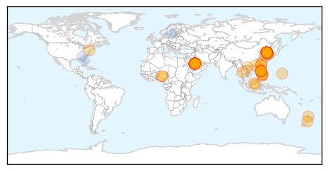
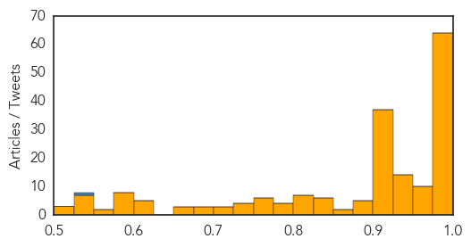

MERS
30-Day Web Trend
25 alerts, 2 warnings

30-Day Twitter Trend
17 alerts, 0 warnings

Article Locations
Article Confidences

Top Articles:
- 1.000
- MERS: no reason to stay home
- 1.000
- Prepare for Spread of MERS-CoV, Says CDC
- 1.000
- Alert Over Middle East Respiratory Syndrome
- 1.000
- South Korea MERS outbreak: 19 deaths confirmed, 154 infected
- 0.999
- Limlingan: The MERS-CoV again
- 0.999
- MERS Not Given Same Vaccine Attention as Ebola, Other Viruses
- 0.999
- MERS: understanding the mysterious virus
- 0.999
- Hospital at center of South Korea's MERS outbreak suspends services; 7 new
- 0.999
- Mers death toll rises to 16 in South Korea outbreak
- 0.999
- MERS: Cases in South Korea rise to 150; death toll rises to 16 since outbreak began in May
- 0.998
- Health and travel advice for Hajj and Umrah updated in light of MERS
- 0.998
- South Korea MERS deaths rise to 16
- 0.998
- South Korea Hospital Identified As Major Source Of MERS Cases
- 0.998
- Nigerian National Security Adviser issues alert over virus
- 0.998
- South Korea continues to battle MERS outbreak
- 0.997
- Editorial: Caution and preparedness
- 0.997
- Sector Updated on MERS-CoV
- 0.997
- Sector updated on Middle East Respiratory Syndrome Coronavirus
- 0.997
- Curbing MERS-CoV in Korea to take weeks – WHO
- 0.997
- Death Toll Rises to 16; More Cases Detected
- 0.997
- S Korea reports two more MERS deaths, five new cases
- 0.997
- Korea ‘large and complex’ MERS outbreak grows to 150 cases, 16 deaths
- 0.996
- NZ 'well prepared' for MERS
- 0.996
- MERS-CoV deaths rise with few drugs in pipeline
- 0.996
- What are we doing to battle respiratory virus?
- 0.996
- South Korea MERS death toll rises to 16, 150 cases confirmed
- 0.996
- South Korea to keep expansionary policy; MERS effect limited for now
- 0.996
- Hospital at Center of South Korea's MERS Suspends Services; 7 New Cases
- 0.995
- Exchange Students in Korea Kicked-out for Wearing Masks against MERS; Korean Citizens Low on Awareness? : Trending News : Venture Capital Post
- 0.995
- Schools reopen as South Korea seeks normality amid MERS outbreak
- 0.995
- Pinoy in Riyadh has MERS-CoV; Malacañang says PH still virus-free
- 0.995
- WHO Confirms Confinement of Virus Within Hospitals
- 0.995
- Czech Republic not to take measures against MERS at present
- 0.995
- MERS virus in Slovakia
- 0.994
- Another Filipino tested positive for MERS-CoV
- 0.994
- Czech Republic not to take measures against MERS at present
- 0.994
- MoH: Local Treated in Miri Confirms Negative from MERS-CoV
- 0.993
- Europe Fears Spread As Man Undergoes Tests In Slovakia
- 0.990
- Vaccine firms ready to contain MERS-CoV
- 0.989
- Schools reopen as South Korea seeks normality amid MERS outbreak
- 0.988
- Americans are unlikely to contract MERS, health experts say
- 0.987
- South Korea Fights To Contain Outbreak, As Saudi Arabia Reports New Cases
- 0.987
- Coronavirus importation threat exists, no reason to panic - Rospotrebnadzor
- 0.983
- Schools reopen as South Korea seeks normality amid MERS outbreak
- 0.983
- Schools reopen as South Korea seeks normality amid MERS outbreak
- 0.983
- Nigeria raises alert on threat of MERS
- 0.982
- Schools reopen in South Korea as president urges return to normality amid Mers outbreak, East Asia News & Top Stories
- 0.982
- Schools reopen in South Korea as president urges return to normality amid Mers outbreak, East Asia News & Top Stories
- 0.982
- Pinoys in Korea still MERS-free – DOLE
- 0.978
- Phuket on alert for the MERS virus , news, Health News, AsiaOne YourHealth
Showing top 50 articles...
Top Tweets:
- 0.642
- RT: WHO Director-General is convening the 9th Meeting of the Emergency Committee on MERS-CoV under International Health Regulations …
- 0.567
- MERS-CoV has spread from ill ppl to others through close contact such as caring for or living w/ infected person
- 0.510
- RT: S. Korea -Gov announces 5 new coronavirus MERS cases 2 deaths: total cases=150 total deaths=16 - June 14 2015 https:…
Unknown
30-Day Web Trend
9 alerts, 3 warnings

30-Day Twitter Trend
6 alerts, 1 warnings

Article Locations


Article Confidences
Top Articles:
- 1.000
- Officials Expect Korea MERS Outbreak to End Before July
- 0.999
- Why MERS Is Likely To Crop Up Outside The Middle East Again
- 0.999
- S. Korea reports two more MERS deaths, five new cases
- 0.999
- S. Korea reports 16th MERS death, five new cases
- 0.999
- WHO Expects More Cases of MERS in South Korea
- 0.999
- Why MERS Is Likely To Crop Up Outside The Middle East Again
- 0.998
- Deaths from South Korea MERS rise to 16
- 0.998
- South Korea reports 16th MERS death as outbreak grows
- 0.998
- The World On Arirang
- 0.998
- MERS death toll reaches 16 among 150 confirmed S. Korea outbreak victims — RT News
- 0.998
- MERS Death Toll in South Korea Rises, but Schools Reopen
- 0.997
- S. Korea's MERS outbreak to end in late June if no super spreader emerges: ministry
- 0.997
- South Korea reports 15th MERS death, seven new cases
- 0.997
- Hospital at epicenter of MERS suspends services
- 0.997
- Airlines cut flights to South Korea as China steps up MERS alert Beijing news, English news, latest beijingnews,www.bjd.com.cn
- 0.997
- South Korea Tightens Quarantines to Prevent Spread of MERS
- 0.997
- S. Korea's MERS outbreak to end in late June if no super spreader emerges: ministry - Xinhua
- 0.997
- South Korea Reports 16th Death from MERS
- 0.997
- MERS infections in S. Korea increase to 150 with 2 more deaths
- 0.996
- More MERS cases in Korea
- 0.996
- WHO predicts that more MERS cases seem likely
- 0.996
- (LEAD) S. Korea reports two more MERS deaths, 5 new cases
- 0.996
- Low Risk of MERS Spreading
- 0.995
- Infections by 'super-spreaders' feared
- 0.995
- Image of Asia: Schools reopen during Korean MERS outbreak
- 0.995
- The rising toll of South Korea's MERS outbreak
- 0.995
- Mers death toll rises to 16 in South Korea as total cases hits 150
- 0.995
- Image of Asia: Schools reopen during Korean MERS outbreak
- 0.994
- MERS Death Toll in South Korea Reaches 16
- 0.994
- Mers death toll in S Korea rises
- 0.994
- MERS latest: More cases revealed; duty free sales still in freefall
- 0.994
- Number of MERS patients in South Korea climbs to 145
- 0.994
- MERS Virus Still Spreading in South Korea, Claims Death Victim Number 16
- 0.994
- Hospital at centre of South Korea's Mers outbreak suspends services
- 0.994
- Our MERS warriors-INSIDE Korea JoongAng Daily
- 0.994
- South Korea Hospital 'Is Source of Many Mers Cases'
- 0.993
- SoKor MERS toll hits 16
- 0.993
- US personnel in MERS quarantine in South Korea
- 0.993
- US personnel in MERS quarantine in South Korea
- 0.993
- Ministry of Health monitoring MERS outbreak
- 0.993
- MERS Killed 16 and Infected Nearly 150 People in South Korea
- 0.992
- MERS deaths and infections now coming up among younger people
- 0.991
- Quarantine team sent to Samsung hospital
- 0.991
- Saudi Arabia Confirms 5 MERS Cases As 16th Death Reported In South Korea
- 0.990
- low risk of MERS spreading
- 0.989
- Schools reopen as South Korea seeks normality in MERS outbreak
- 0.989
- Bruneian tests negative for MERS
- 0.988
- Mers death toll hits 15 in S. Korea; 145 infected, East Asia News & Top Stories
- 0.987
- Schools reopen as South Korea seeks normality in Mers outbreak, Government & Economy
- 0.987
- [Editorial] Kudos to doctors, nurses
Showing top 50 articles...
Top Tweets:
- 0.540
- RT: Also of the 150 MERS infections so far 70 were in hospital patients 54 in families of patients or visitors and 26 in health …